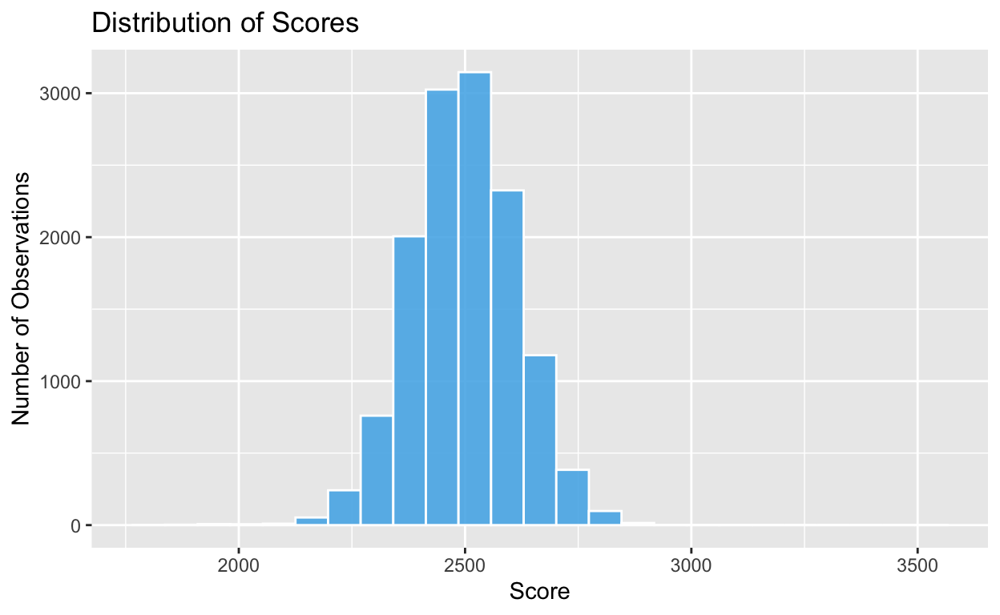
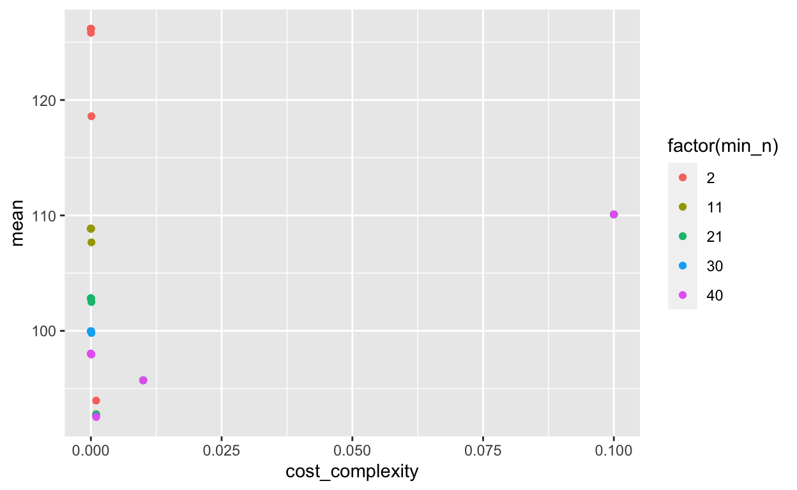
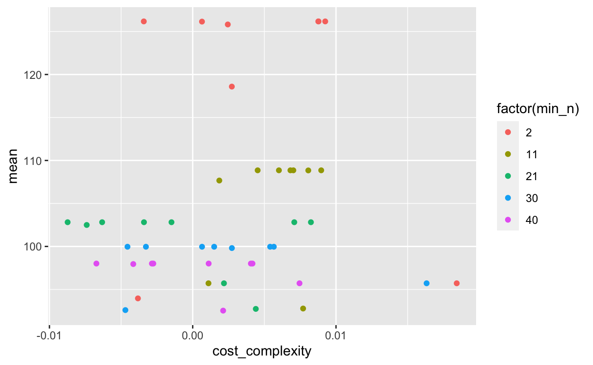

Three models: fitting procedures and the results of model evaluation.
Data Recipe
Inputs:
role #variables
id vars 6
outcome 1
predictor 48
Training data contained 9949 data points and 9949 incomplete rows.
Operations:
Variable mutation for tst_dt [trained]
Novel factor level assignment for gndr, ethnic_cd, ... [trained]
Unknown factor level assignment for gndr, ethnic_cd, ... [trained]
Sparse, unbalanced variable filter removed calc_admn_cd, ... [trained]
Median Imputation for enrl_grd, tst_dt, lat, ... [trained]
Dummy variables from gndr, ethnic_cd, tst_bnch, sp_ed_fg, ... [trained]
Sparse, unbalanced variable filter removed gndr_new, ... [trained]
Interactions with lat:lon [trained]# A tibble: 9,949 x 37
id attnd_dist_inst… attnd_schl_inst… enrl_grd tst_dt
<dbl> <dbl> <dbl> <dbl> <dbl>
1 188408 1970 219 3 1.52e9
2 226880 2252 1208 4 1.53e9
3 3436 2243 1176 5 1.53e9
4 48828 2043 390 4 1.52e9
5 252482 2087 574 3 1.53e9
6 226888 1922 1287 8 1.53e9
7 70637 2197 1012 6 1.53e9
8 170356 2239 4641 4 1.53e9
9 158918 2142 763 3 1.53e9
10 185543 2142 754 4 1.53e9
# … with 9,939 more rows, and 32 more variables:
# partic_dist_inst_id <dbl>, partic_schl_inst_id <dbl>,
# ncessch <dbl>, lat <dbl>, lon <dbl>,
# p_american_indian_alaska_native <dbl>, p_asian <dbl>,
# p_hispanic_latino <dbl>, p_white <dbl>, p_multiracial <dbl>,
# free_lunch_qualified <dbl>, reduced_price_lunch_qualified <dbl>,
# no_category_codes <dbl>, n <int>, prop_frl <dbl>,
# prop_reduced_lunch <dbl>, score <dbl>, gndr_M <dbl>,
# ethnic_cd_H <dbl>, ethnic_cd_M <dbl>, ethnic_cd_W <dbl>,
# tst_bnch_X2B <dbl>, tst_bnch_X3B <dbl>, tst_bnch_G4 <dbl>,
# tst_bnch_G6 <dbl>, tst_bnch_G7 <dbl>, sp_ed_fg_Y <dbl>,
# tag_ed_fg_Y <dbl>, econ_dsvntg_Y <dbl>, ayp_lep_F <dbl>,
# ayp_lep_unknown <dbl>, lat_x_lon <dbl>Linear models assume a normal distribution within the data it is applied to. As demonstrated in the histogram, the score variable displays a normal distribution, which suggests a linear model can be fit to the data with both low variance and low bias.

The three linear models presented in the course represent penalized regression models, which shrink the coefficients towards zero in order to reduce the model’s overall variance.
Instead of selecting one of the specific penalties to run our linear model, we opted to use cross-validation to find the optimal tuning parameters with a grid search. We specifically tuned the penalty and mixture parameters of the linear model. Our grid search utilized a regular grid with 10 possible values for the penalty and 5 possible values for the mixture, which produced 50 models per fold, resulting in a total of 500 models.
74.062 sec elapsed# A tibble: 100 x 8
penalty mixture .metric .estimator mean n std_err .config
<dbl> <dbl> <chr> <chr> <dbl> <int> <dbl> <chr>
1 1.00e-10 0 rmse standard 90.4 10 0.655 Model01
2 1.00e-10 0 rsq standard 0.402 10 0.00692 Model01
3 1.29e- 9 0 rmse standard 90.4 10 0.655 Model02
4 1.29e- 9 0 rsq standard 0.402 10 0.00692 Model02
5 1.67e- 8 0 rmse standard 90.4 10 0.655 Model03
6 1.67e- 8 0 rsq standard 0.402 10 0.00692 Model03
7 2.15e- 7 0 rmse standard 90.4 10 0.655 Model04
8 2.15e- 7 0 rsq standard 0.402 10 0.00692 Model04
9 2.78e- 6 0 rmse standard 90.4 10 0.655 Model05
10 2.78e- 6 0 rsq standard 0.402 10 0.00692 Model05
# … with 90 more rows# A tibble: 1 x 8
penalty mixture .metric .estimator mean n std_err .config
<dbl> <dbl> <chr> <chr> <dbl> <int> <dbl> <chr>
1 0.0000000001 0.5 rmse standard 90.4 10 0.656 Model21The specific metric used to evaluate model performance was the RMSE. Utilzing the show_best() function, we isolated the best performing model, which obtained a RMSE value of approximately 90.5. As we randomly sampled 7% of the data, consecutive runs of the model generated RMSE values ranging from 90.4 - 90.6. Of note, initial iterations of the linear regression model were run exclusively on the combined FRL and training data, which resulted in a RMSE value of ~96.0. Expanding the data set to include the ethnicities and ode_schools and adding the interaction of lat and lon to the recipe decreased the RMSE to ~90.5. The strength of the linear model is likely a direct result of the normal distribution of the data it was applied to.
While decision trees are not as complex as other modeling techniques, they do provide a foundation for more complex models, such as a random forest, which was the technique selected for our third model. As a non-parametric model, decision trees do not make any assumptions about the data, which is a positive feature in situations where it is challenging to assume a data distribution. As we randomly sampled 7% of the data, we cannot truly conclude that the score variable represents a true normal distribution. Therefore, a decision tree model provides a sensitive method to model the data to generalize to the complete data set in the case a normal distribution does not exist.
To construct our decision tree model, we first tuned two of the three decision tree hyperparameters. Specifically, we tuned the cost_complexity and min_n hyperparameters to allow them to control the depth of the tree. Second, we utilized a regular grid with 10 possible values for the cost complexity and 5 possible values for the minimum n.
688.82 sec elapsed
# A tibble: 5 x 8
cost_complexity min_n .metric .estimator mean n std_err .config
<dbl> <int> <chr> <chr> <dbl> <int> <dbl> <chr>
1 0.001 40 rmse standard 92.5 10 0.601 Model48
2 0.001 30 rmse standard 92.6 10 0.632 Model38
3 0.001 21 rmse standard 92.7 10 0.642 Model28
4 0.001 11 rmse standard 92.8 10 0.619 Model18
5 0.001 2 rmse standard 94.0 10 1.14 Model08396.967 sec elapsed# A tibble: 1 x 7
min_n .metric .estimator mean n std_err .config
<int> <chr> <chr> <dbl> <int> <dbl> <chr>
1 35 rmse standard 92.5 10 0.593 Model26Decision Tree Model Specification (regression)
Main Arguments:
cost_complexity = 0.001
min_n = 35
Computational engine: rpart # Resampling results
# Monte Carlo cross-validation (0.75/0.25) with 1 resamples
# A tibble: 1 x 6
splits id .metrics .notes .predictions .workflow
<list> <chr> <list> <list> <list> <list>
1 <split [9.… train/te… <tibble [2… <tibble … <tibble [3,31… <workflo…# A tibble: 2 x 3
.metric .estimator .estimate
<chr> <chr> <dbl>
1 rmse standard 91.1
2 rsq standard 0.365# A tibble: 3,314 x 3
.pred .row score
<dbl> <int> <dbl>
1 2463. 2 2382
2 2711. 3 2533
3 2556. 4 2641
4 2580. 11 2429
5 2463. 18 2390
6 2403. 27 2246
7 2628. 29 2680
8 2580. 37 2625
9 2383. 41 2366
10 2628. 42 2592
# … with 3,304 more rowsAfter running the model, we ran collect_metrics() to evaluate the value of the RMSE and created a scatter plot to visualize the relationship between the mean RMSE values and cost_complexity values. The show_best() function revealed that the best RMSE values of the model ranged from 92.3-92.8. To reduce the value of the RMSE, we tuned our grid to limit the range of the min_n value from 10 to 40 and set the cost complexity to equal 0.001. After running the model with the updated tuned grid, the RMSE was slightly reduced to 92.29.
Random forests provide very strong “out of the box” model performance. Additionally, with a wide variety of predictive variables, random forests are adept to isolating the unique features of the data because a random selection of features is included in each split, which helps decorrelate the trees.
To construct our random forest model in which the model was evaluated using OOB samples, the following steps were taken:
mtry and min_n hyperparameters. The number of trees was set to 1000, and tune was set to 10.[1] 890.905 sec elapsed# A tibble: 1 x 5
.metric .estimator mean n std_err
<chr> <chr> <dbl> <int> <dbl>
1 rmse standard 92.7 10 0.670912.076 sec elapsed# A tibble: 5 x 8
mtry min_n .metric .estimator mean n std_err .config
<int> <int> <chr> <chr> <dbl> <int> <dbl> <chr>
1 6 40 rmse standard 90.2 10 0.617 Model05
2 8 20 rmse standard 91.1 10 0.605 Model10
3 16 30 rmse standard 91.2 10 0.586 Model01
4 21 33 rmse standard 91.3 10 0.582 Model02
5 25 25 rmse standard 92.0 10 0.598 Model08The tuned random forest model yielded the best RMSE value of any model evaluated for our project. Dependent upon the random sample, the obtained RMSE ranged from 89.90 to 90.2.
The tuned random forest model generated the lowest RMSE value; therefore, it was determined to be the strongest model of all models evaluated for the project. To finalize this model, the following steps were taken:
══ Workflow ══════════════════════════════════════════════════════════
Preprocessor: Recipe
Model: rand_forest()
── Preprocessor ──────────────────────────────────────────────────────
8 Recipe Steps
● step_mutate()
● step_novel()
● step_unknown()
● step_nzv()
● step_medianimpute()
● step_dummy()
● step_nzv()
● step_interact()
── Model ─────────────────────────────────────────────────────────────
Random Forest Model Specification (regression)
Main Arguments:
mtry = 6
trees = 1000
min_n = 40
Engine-Specific Arguments:
num.threads = cores
importance = permutation
verbose = TRUE
Computational engine: ranger 11.571 sec elapsed[[1]]
# A tibble: 2 x 3
.metric .estimator .estimate
<chr> <chr> <dbl>
1 rmse standard 88.7
2 rsq standard 0.399To generate final predictions, the finalized random forest workflow was fit to the training data (note: the trained data set was joined with the FRL and ethnicities data sets as outlined in the data description blog post).The ensuing fit was then applied to the test data set to generate final predictions.
# A tibble: 3,314 x 1
.pred
<dbl>
1 2455.
2 2712.
3 2569.
4 2574.
5 2454.
6 2446.
7 2599.
8 2588.
9 2403.
10 2555.
# … with 3,304 more rows